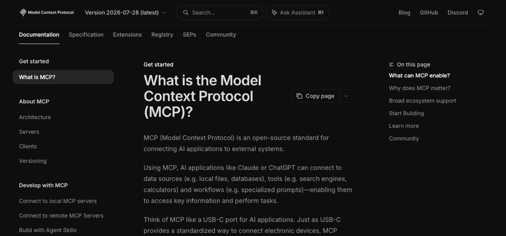

Week 2: Capability is designed, not prompted
Before class
- Watch 2.1 Tools and function calling in one diagram, 2.2 MCP in eight minutes and 2.3 The autonomy dial: workflows, agents and approval gates. The quiz at the start of class has five questions on them.
- Read Anthropic, Writing effective tools for agents (September 2025), with an eye on descriptions, arguments and results.
- Bring your Lab 1 loop or Fleet agent with its traces, and the opportunity audit, which the proposal builds on.
Tonight
| 5:30 | Quiz on the videos. Trace of the week, the first team, ten minutes. Then the five ideas below, with the room. |
| 6:10 | Lab 2, Tools and harness. Two paths, one output sheet. |
| 7:50 | Break. |
| 8:05 | Studio. The proposal. I sit with two teams at a time. |
| 9:15 | Synthesis, and what to do before week 3. |
The model writes the request. Your code runs it.
A tool call has four steps. Your code sends the model the prompt and a list of tool schemas, each one a tool's name, description and arguments, written as JSON. The model returns a tool call instead of prose: a tool's name and the arguments to pass. Your code, not the model, runs the function. The result goes back as a message, and the model continues, either calling another tool or writing its answer.
The sentence to remember: the model never runs anything. It writes a request, and your code decides whether and how to honor it. Tonight's gate, allow-list, cap and dry run all sit between the request and the function, out of the model's reach.
The APIs call this function calling, and OpenAI shipped it in June 2023. Inside the agent loop it is a tool call: tool call for the event, tool for the thing called, tool schema for its definition.
Ask the room: in the Lab 1 trace you annotated, which arguments did the model invent, and what would the schema have had to say to stop it?
The schema is the interface, and a tool is a permission
The model chooses tools by reading their schemas, so the schema is the interface, and Anthropic's Writing effective tools for agents (September 2025) shows how to write one. The description says when to use the tool and when not to. Arguments are few, typed, with an example. The result holds what the model needs next rather than everything the database returned, because every token goes into the context and costs money. Errors come back in words the model can act on, not found, try a shorter query, rather than a stack trace. Each tool does one thing.
Anthropic's own tests showed that rewriting tool descriptions alone improved task success, with no change to the model. That is capability designed rather than prompted. Tonight you hand two schemas for your project's agent to another team. If they cannot tell from the schema alone what each tool does and when to use it, the model cannot either.
A tool is also a permission. A read tool brings the outside world into the context, including things you did not intend. A write tool changes the world: it sends, pays, moves, deletes. Its limits belong in code, an allow-list, a cap, a dry-run flag, a gate, because telling the model please be careful is not a control. The Replit agent had been told, repeatedly, not to make changes without permission (Fortune, July 23, 2025). It did anyway.
Skills are the other kind of designed capability. Anthropic's Agent Skills (October 2025) package procedural knowledge as a folder: a short description the agent always sees, and full instructions it loads only when a task calls for them. A tool gives the agent a hand. A skill tells it how a job is done here.
MCP: where tools come from, and what it does not do
MCP, the Model Context Protocol, is how the industry agreed to share tools: an open standard for connecting an AI application to outside systems. Anthropic released it in November 2024, OpenAI adopted it in March 2025, and Google followed. The project's own analogy is a USB-C port (modelcontextprotocol.io). A Jira server written once now works in any client.

Three words carry the design. The host is your agent application, which owns the model and the loop. Inside it runs an MCP client. Each outside system is exposed by an MCP server. When the host starts, the client asks each server what it offers: tools the model can call, resources the host can read, and prompts, which are reusable instructions. The client turns the servers' tools into tool schemas, the model chooses one, and the client makes the call. A server can run on your laptop or as a web service over HTTP, and a service that depends on a file on someone's laptop is not a service.
Now the limits. MCP does not make tools safe: a server can expose a tool that deletes things behind a friendly name. It does not vet servers: anyone can publish one, and a server you install is code running with your permissions, inside your trust boundary. It does not shrink the context: every connected server adds its schemas to the window on every call, and twenty servers can mean hundreds of tool descriptions. And it does not choose: the model still picks the tool, so a confusing server makes the agent worse.
In May 2025 Invariant Labs showed that a coding agent connected to GitHub's own MCP server could be steered, by a malicious issue in a public repository, into reading a private repository and publishing its contents (GitHub MCP Exploited). They called it a toxic agent flow. Nothing in the protocol was broken. The agent had the tools and followed instructions it found in data. Week 5 takes the case apart.
Ask the room: a ticketing system you buy ships an MCP server with forty tools. Which five does your agent need, who decides, and what can the other thirty-five touch?
The autonomy dial, and how a gate is built
How much the model gets to decide is a dial rather than a switch, and the five positions are the ones from week 1.
Workflows sit toward the left and agents toward the right, because a workflow fixes the steps in code and an agent lets the model choose them. Most good systems are a workflow with an agent inside, at the one step where judgment is needed.
An approval gate is a specific piece of harness code. Before a named tool call, say issue refund, the loop pauses and saves its state. A person sees the proposed action with its arguments and the reasons, and approves, edits or rejects it. The loop resumes from the saved state carrying the decision, and the pause goes into the trace with who approved what and when. In LangGraph this is an interrupt on a node. In Fleet, LangSmith's no-code agent builder, it is an approval setting on a tool. Either way the gate lives in the harness, where the model cannot talk its way past it.
| Consider | Move left when | Move right when |
|---|---|---|
| Mistakes | Costly or irreversible. | Cheap and visible. |
| Evidence | None yet on how often it fails. | A measured failure rate you can live with. |
| People | The user is not the one who gets hurt. | Review is faster than doing the task. |
Two of the three conditions on the right require measurement, which is why week 4 exists. In the proposal, state the position per tool rather than for the agent as a whole: reading the calendar can be Unattended while sending the invitation is Gated.
Ask the room: for the job your team chose, which action would you gate first, who answers the gate, and how long can they take before the service is stuck?
Serving the agent so other software can call it
Everything so far runs when a person types a task. A service answers when another program calls it: a ticketing system, a scheduler, a web form. It is the first project deliverable.
On the code path the harness becomes an endpoint: an HTTP route that accepts a task, runs the graph, and returns the result and a run id for the trace. The endpoint cannot wait while a person decides, so a run that pauses at a write tool returns a pending approval with the proposed action, and a second call carries the decision and resumes the saved state. The caller has to expect both answers.
On the no-code path Fleet hosts the agent and the caller is the small bridge application from CIS 4394, week 2, which lets another program call a Fleet agent. Both paths end in the same place: another piece of software made the request, the trace recorded it, and a person was still in charge of the write.
Ask the room: when the caller is a program and nobody is at a screen, who answers the gate, and what happens to the ticket while they do?
Trace of the week
The first team presents tonight: one trace from Lab 1, ten minutes. This week, look for three things. Which tool the model chose at each step and which arguments it filled in, especially one that appears nowhere in the task, because the most common tool failure is the right tool with an invented argument. What came back, and whether it was what the model needed next. And where a gate would have paused the run, and what the person at the gate would have seen.
Lab 2: Tools and harness
Goal: turn the Lab 1 loop into a harness with a gate, let another program call it, and add a tool source you did not write. Starter files are posted on iCollege before class.
Code path
- Grow the week 1 loop into a harness: persistent state, a step and cost budget, a definition of done, an approval gate on the write tool, and a trace per run.
- Write two tool schemas for your project's agent. Another team must say from the schema alone what each does and when to use it. Give the write tool a limit in code.
- Port the harness to LangGraph: the loop becomes a graph and the gate an interrupt on the node that calls the write tool.
- Expose the graph as an endpoint another program can POST to. Call it from a second program and save the request and response, including the paused run.
- Add one MCP server as a tool source, after the checklist from video 2.2: who maintains it, which tools you need (expose only those), read or write, how many tokens its schemas add, where it runs.
- Read one run end to end and mark the invented arguments and the pause.
No-code path
- In Fleet, open the week 1 agent. Set the draft-reply tool to require approval, and write instructions that say what done looks like.
- Write two tool schemas, the name and description Fleet shows the model, for another team to read the same way.
- Run the Lab 1 tasks, approving at least one action at the gate and rejecting at least one. Find the pause in the trace view.
- Call the agent from the small bridge application from CIS 4394, week 2, so another program makes the request. Save the call and the reply.
- Add one MCP server. Answer the same checklist first, expose only the tools you need, and read in the trace how many tokens its schemas added.
- Read one run end to end and mark the invented arguments and the pause.
Output sheet, one page per team, handed in at 7:50:
- The tool list: each tool, read or write, its limit, and whether it is gated.
- One trace of a gate pausing an action, with what the person saw and decided.
- The endpoint or bridge call and its response.
- Two sentences: what the MCP server added, and what it could touch.
Studio: the proposal
The proposal, due before week 3, turns the opportunity audit into a design the four questions can be asked of, under seven headings.
- The job and the user, carried over from the opportunity audit.
- The architecture, as a diagram described in words: what calls the agent, what the loop calls, where the trace goes.
- The tool list: each tool, read or write, gated or not, and the limit in code on every write.
- The autonomy position for each action, with the gate named: which action pauses, who approves, and how quickly.
- The data pack: what data, from where, and what is synthetic or de-identified.
- What done looks like, in a form you can check.
- The team roles, and who owns which deliverable.
When I sit with your team I will ask the four questions about the tool list, tool by tool.
- What tools may the loop call?
- What is it allowed to touch?
- How do we know it did the right thing, reliably, and not once in a demo?
- What does it cost, in money and in people's time, to find out?
For a read tool the second question is about what the result can bring into the context, and for a write tool about the limit in code and the gate. I will also ask what evidence would move you one step right.
Synthesis
- The model writes the request and your code runs it. Every control lives in that gap.
- The schema is the interface. A tool is a permission, and limits on a write tool belong in code.
- MCP standardizes where tools come from. Whether they are safe is still your harness.
- Autonomy is a dial set per tool. A gate pauses the loop, saves its state and records the decision in the trace. You cannot earn a position without numbers.
Before week 3: watch videos 3.1 to 3.3 and read Anthropic, Effective context engineering for AI agents, and Google, Context Engineering: Sessions and Memory. Submit the proposal. Next week: context, what the model sees when it decides.
Sources
- Anthropic, Writing effective tools for agents, September 11, 2025.
- Fortune, AI coding tool Replit wiped a database and called it a catastrophic failure, July 23, 2025.
- Anthropic, Equipping agents for the real world with Agent Skills, October 16, 2025.
- Model Context Protocol, What is the Model Context Protocol (MCP)?
- Invariant Labs, GitHub MCP Exploited: Accessing private repositories via MCP, May 26, 2025.
- LangChain, Fleet documentation.
- CIS 4394, Week 2: Unpacking coding agents, then building your own, 2026.
- Anthropic, Effective context engineering for AI agents, September 29, 2025.
- Google, Context Engineering: Sessions and Memory, Day 3 whitepaper, 2025.